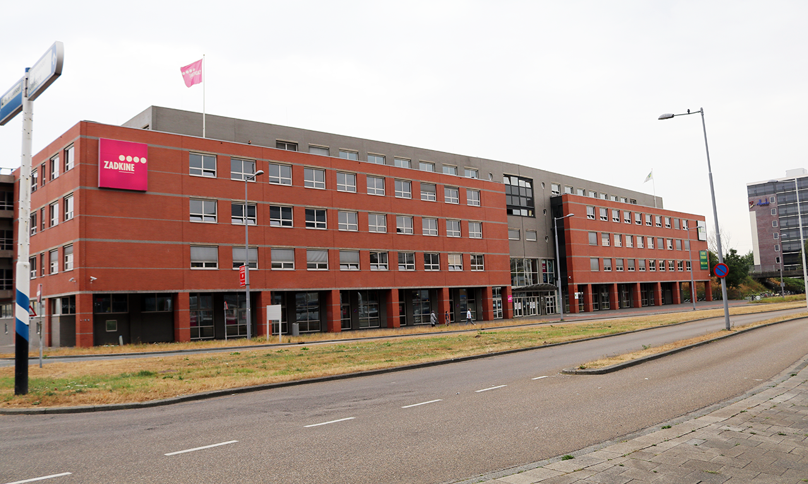

Jan Ligthartstraat Location

Address: Jan Ligthartstraat 1, Rotterdam
De hoofdlocatie van Tech College Rotterdam aan de Jan Ligthartstraat 1 vormt het hart van de onderwijsactiviteiten van het college. Deze locatie staat bekend om haar brede scala aan opleidingen, variërend van elektrotechniek en bouwkunde tot ICT en duurzame technologie. Als centraal punt van de campus biedt deze locatie studenten de ideale mix van theoretische kennis en praktische ervaring, met de nadruk op innovatie en technologische vooruitgang.
Other Locations
Langeweg Location
Address: Langeweg, Rotterdam
De campus aan de Langeweg in Rotterdam is een belangrijk onderdeel van Tech College Rotterdam en staat bekend om zijn specialisatie in geavanceerde technologieprogramma's. Studenten die deze locatie bezoeken, kunnen profiteren van een breed scala aan opleidingen op het gebied van technologie en innovatie. Van robotica en kunstmatige intelligentie tot ICT en netwerktechnologie, de campus biedt studenten de mogelijkheid om zich te verdiepen in de nieuwste technologische ontwikkelingen.
Parallelweg Location
Address: Parallelweg, Rotterdam
De campus aan de Parallelweg in Rotterdam biedt een breed scala aan technische opleidingen met een sterke focus op industriële technologie en infrastructuur. Deze locatie is gespecialiseerd in opleidingen die studenten voorbereiden op carrières in de bouwtechniek, werktuigbouwkunde en transporttechnologie. De Parallelweg-campus combineert een praktijkgerichte aanpak met innovatieve onderwijsprogramma's, waardoor studenten diepgaande kennis en vaardigheden opdoen die direct toepasbaar zijn in de technische sector.
Prins Alexander Location
Address: Prins Alexander, Rotterdam
De campus aan Prins Alexander in Rotterdam staat bekend om zijn focus op duurzame technologie en innovatieve energieoplossingen. Deze locatie biedt opleidingen die zich richten op onderwerpen zoals duurzame energie, energietechniek en milieuvriendelijke technologieën. Studenten leren hier de nieuwste technieken en strategieën om een positieve bijdrage te leveren aan de overgang naar een duurzamere toekomst.
Rotterdam Campus Hoogvliet
Address: Rotterdam Campus Hoogvliet, Rotterdam
De Rotterdam Campus Hoogvliet is een van de meest veelzijdige locaties van Tech College Rotterdam, waar opleidingen worden aangeboden in een breed scala aan technische en beroepsgerichte disciplines. Deze campus staat bekend om zijn focus op praktijkgericht onderwijs in vakgebieden zoals installatietechniek, elektrotechniek, en zorgtechnologie. Studenten aan de Campus Hoogvliet worden opgeleid om direct in de praktijk aan de slag te gaan, met een sterke nadruk op vakmanschap en technische vaardigheden.